Kıbrıs'ın ikonik simgelerini, tarihi şehirlerini ve huzurlu sahil yollarını içeren en popüler gezi rotalarımızı keşfedin.
Sadece 4 adımda adayı özgürce keşfetmeye hazır olun.
Kıbrıs'ta araç kiralamak için ulusal (TR veya uluslararası) ehliyetiniz ve pasaport/kimliğiniz yeterlidir. Ekstra bir uluslararası ehliyete gerek yoktur.
Araç kiralamak için genellikle en az 21 yaş ve 2 yıllık ehliyet şartı aranır. Lüks segment araçlar için bu sınır 25'e çıkabilir.
Zaman kazanmak için aracınızı Ercan Havalimanı teslimatlı rezerve edin. Şirket yetkilileri sizi çıkışta adınızla karşılar.
Kıbrıs'ta kiralık araçlar muafiyetli veya tam kasko (CDW) ile gelir. Sözleşmeyi imzalamadan önce lastik, cam ve far sigorta kapsamını mutlaka sorun.
📌 Önemli Hatırlatma: Kıbrıs'ta kiralık araçların plakaları Kırmızı renklidir ve trafik sağdan değil, soldan akar!
Ercan Havalimanı'nda teslimat yapan popüler global ve yerel acenteler:
Global güvence, havalimanı ofis teslimatı.
7/24 Ercan Havalimanı teslimatı ve yüksek müşteri memnuniyeti.
Geniş araç filosu ve hızlı kontrat işlemleri.
Sezona ve kiralama süresine göre değişen yaklaşık fiyat aralıkları:
Hyundai i10, Nissan Note vb.
Nissan Qashqai, Kia Sportage vb.
Mercedes E-Serisi, BMW X5 vb.
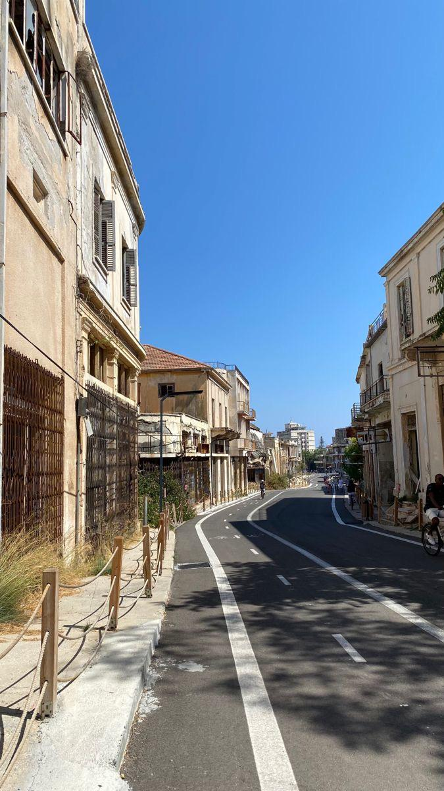
Havalimanından inişte başlayan; tarihi Petek Pastanesi, Kapalı Maraş, deniz keyfi ve İskele eğlencesini içeren dopdolu 1 gün.
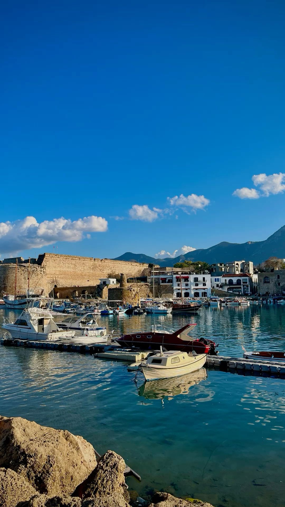
Tarihi kaleler, batık gemi müzesi ve Kıbrıs'ın en popüler plajlarından birinde deniz keyfi.
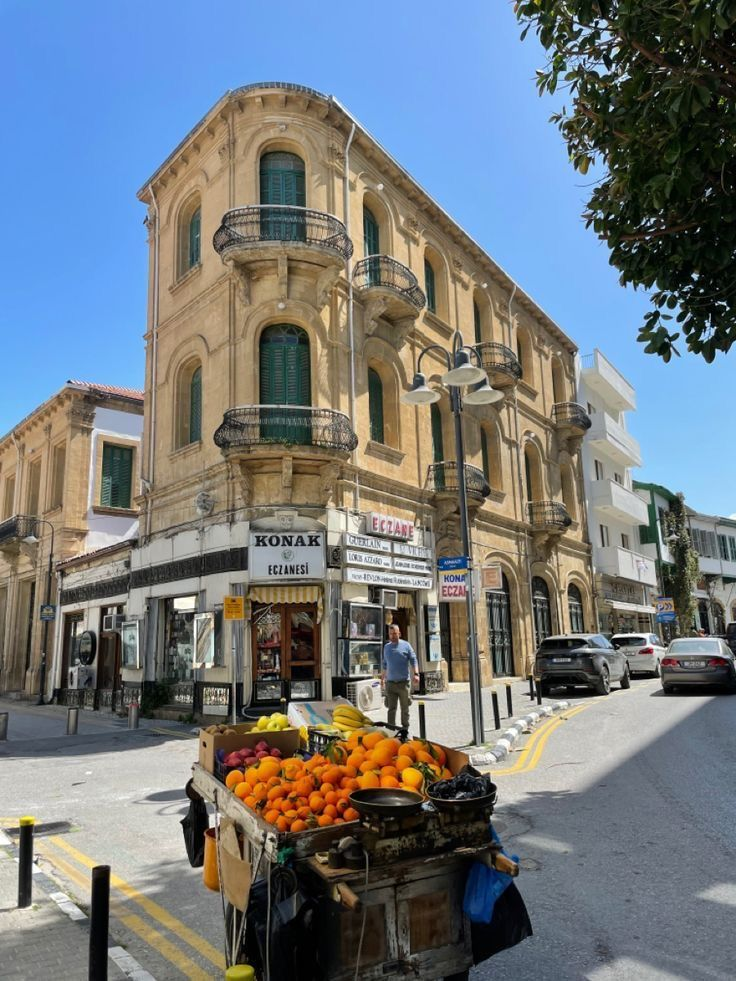
Büyük Han, Selimiye Camii ve iki ülkeyi ayıran sınır hattı boyunca kültürel bir keşif.
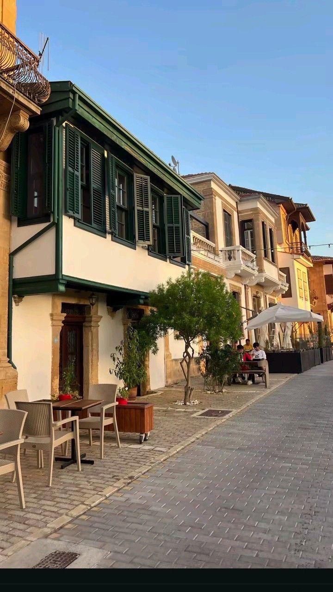
Klasik araba müzesi, Dereboyu caddesinde alışveriş ve tarihi Rüstem Kitabevi.
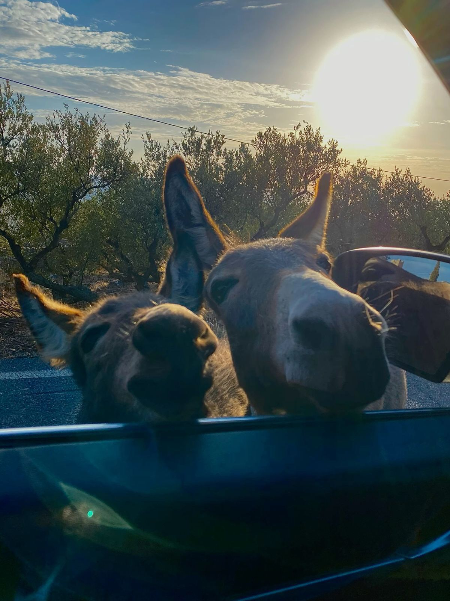
Altınkum Plajı'nda yüzme, yabani eşekleri besleme ve tarihi manastır ziyareti.
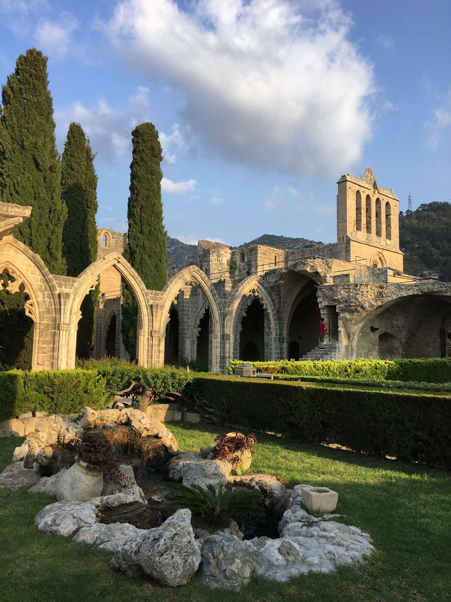
Eşsiz manzaralı Bellapais Manastırı, Akdeniz'de tekne turu ve meşhur Eziç akşam yemeği.
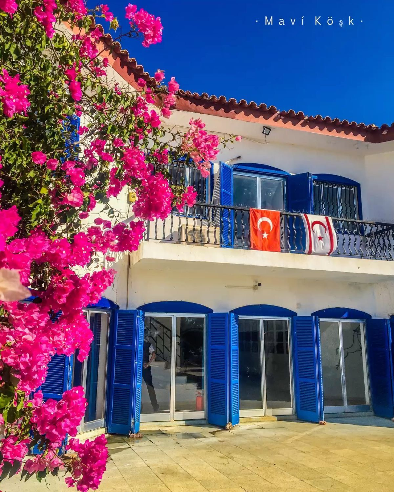
Çilek toplama etkinliği, gizemli Mavi Köşk ve Akdeniz köyünde gün batımı tekne turu.
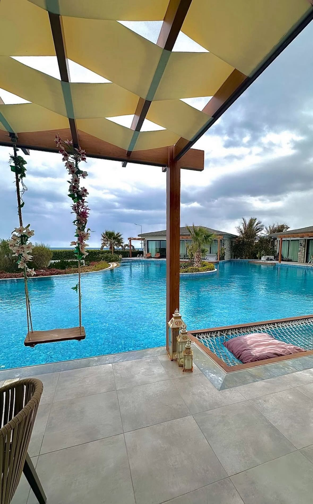
Turkuaz sularda lüks Cabana keyfi ve Alta Marea Lounge'da şık bir akşam yemeği.
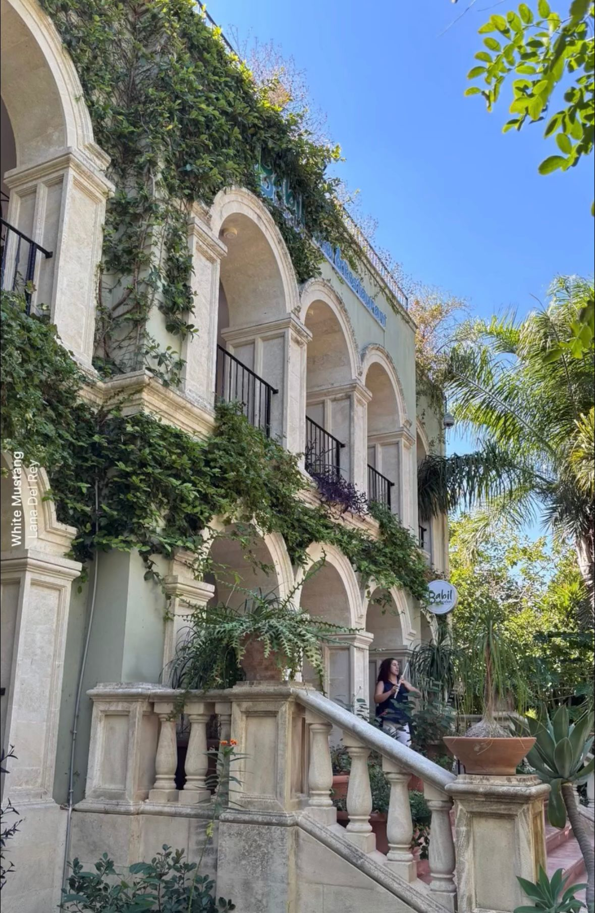
Botanik bahçelerinde huzurlu bir yürüyüş ve akşam açık hava sineması keyfi.
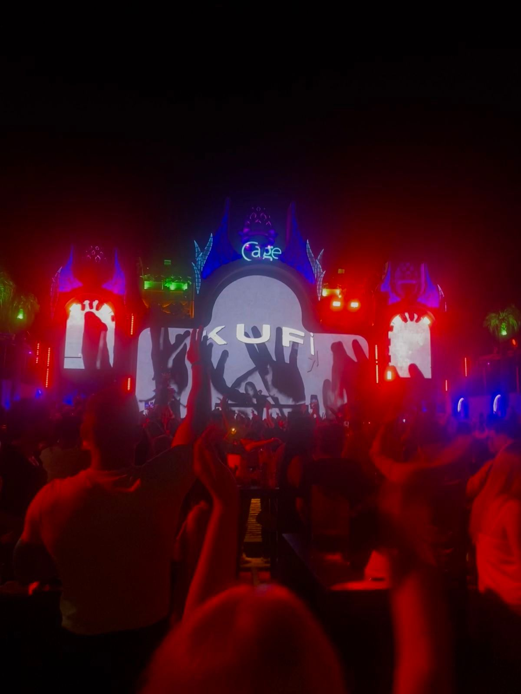
Dağ yollarında zipline, doğa yürüyüşü ve Kıbrıs'ın en büyük açık hava kulübünde eğlence.
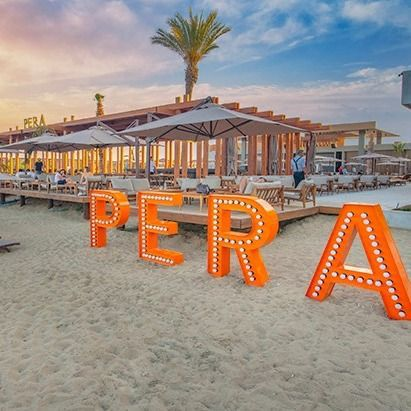
Long Beach'in en popüler plajında lüks Akdeniz günü ve balık akvaryumu gezisi.
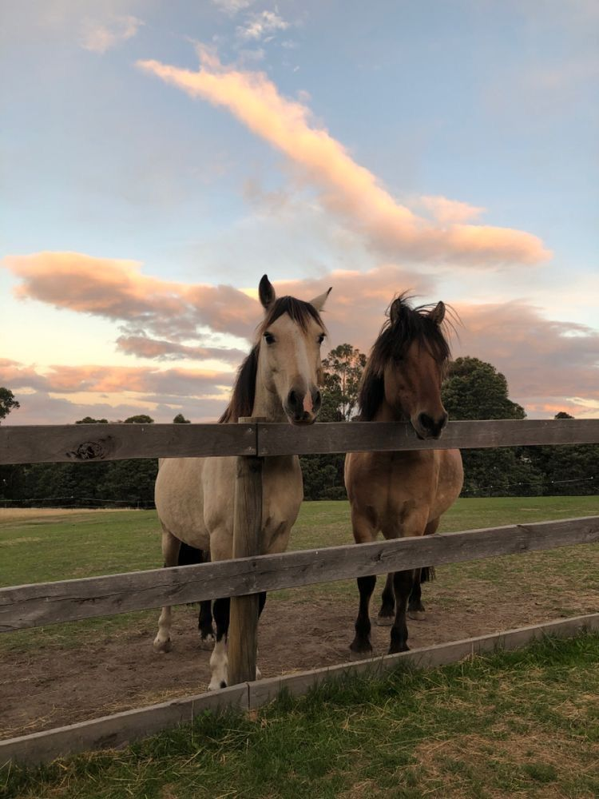
Doğada at binme, heyecan dolu karting yarışı ve Kukla Göleti çevresinde huzur durakları.
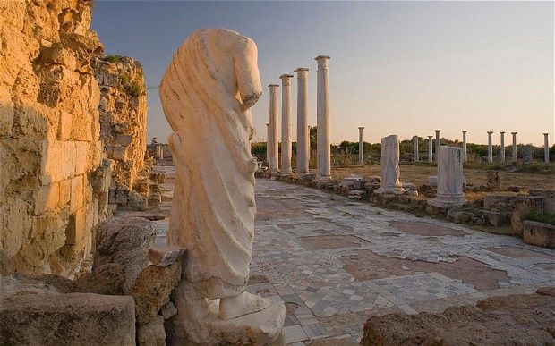
Tarihi Salamis harabeleri, Mağusa Limanı ve geleneksel Kıbrıs meyhanesi.
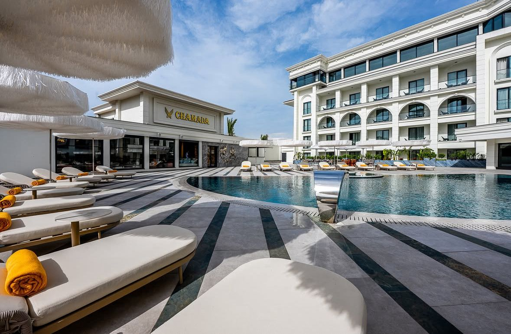
Görkemli açık büfe lezzetleri, Cabana keyfiyle adaya rüya gibi bir veda.
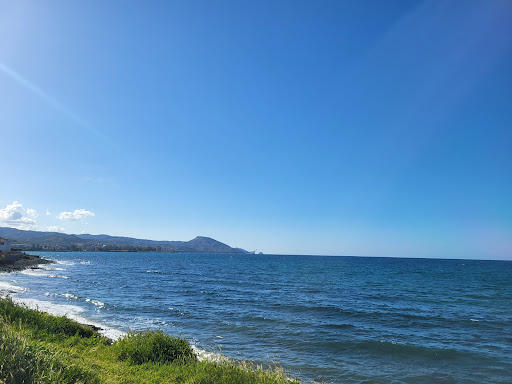
Sakin Şehir unvanına sahip Lefke ve sahil kasabası Gemikonağı'nı kapsayan, akşam yemeğinde dalga seslerinin eşlik edeceği harika bir günübirlik rota
Kıbrıs'ta direksiyon sağda, trafik ise soldadır. Çemberlere (dönel kavşak) girerken sağdan gelen araca yol vermeyi unutmayın.
Ada genelinde çok sayıda sabit hız kamerası bulunur. Cezalar kiralık araç şirketlerine doğrudan yansıtılır.
Şehirlerarası yollarda istasyonlar arası mesafe açılabilir. Dağ yollarına tırmanmadan önce deponuzu kontrol edin.
Drive Cyprus rotalarını kiralık araçlarıyla keşfeden misafirlerimizin yorumları.
"Mağusa & İskele Sahil Turu rotasını harfiyen takip ettik. Petek Pastanesi'ndeki kahvaltıdan tutun, Kapalı Maraş ve İskele'deki akşam yemeğine kadar her şey kusursuz planlanmıştı. Kıbrıs'ı ilk kez bu kadar verimli gezdim!"
"Buradaki sürüş rehberi sayesinde sağdan direksiyona çok hızlı alıştım. Bellapais Köyü ve akşamında Eziç'te yediğimiz yemek harikaydı.Tekrar geldiğimizde İskele turunu denemek için sabırsızlanıyoruz."
"Karpaz Doğası turuna bayıldık! Eşekleri beslemek için yanımıza havuç alma ipucu hayat kurtardı, çocuk gibi eğlendik. Altınkum Plajı ise tam anlamıyla bir doğa harikası. Kesinlikle tavsiye ederim."
Kıbrıs, tarihi dokusu, eşsiz sahilleri ve büyüleyici doğasıyla keşfedilmeyi bekleyen bir cennet. Ancak adanın kendine has trafik kuralları (soldan akan trafik) ve keşfedilmemiş gizli rotaları, ilk kez gelen gezginler için bazen zorlayıcı olabiliyor.
Ada Rehberi, tam olarak bu noktada doğdu. Amacımız, Kıbrıs'a ayak basan her seyahatseverin altındaki kiralık araçla hiç yabancılık çekmeden, en doğru, en güvenli ve en keyifli rotaları bir yerel uzman gibi deneyimlemesini sağlamak.
Sadece popüler turistik noktaları değil; Karpaz'ın hür eşeklerinden Bellapais'in mistik sokaklarına kadar adanın ruhunu yansıtan her köşeyi adım adım planlayarak cebinize getiriyoruz.
Zaman kaybettirmeyen, nokta atışı gezi planları.
Kıbrıs trafiğine ve kurallarına hızlı adaptasyon desteği.
Detaylı Rota
Yerel Deneyim
Rehberlik & Bilgi
Gizli Maliyet
Adayı kiralık araçla keşfetmeden önce bilmeniz gereken tüm detaylar ve sıkça sorulan sorular.
Kıbrıs uzun yıllar Britanya yönetimi altında kaldığı için trafik düzeni İngiltere'deki gibi soldan akmaktadır. İlk 15-20 dakika direksiyonun ve sinyal kollarının ters olmasına adapte olmakta zorlanabilirsiniz; ancak yollardaki uyarı tabelaları ve diğer araçların akışı sayesinde refleksleriniz çok hızlı uyum sağlayacaktır. Özellikle dönel kavşaklara (çemberlere) girerken her zaman sağdan gelen araca yol vermeniz gerektiğini unutmamanız önemlidir.
Evet, Türkiye Cumhuriyeti (TC) ehliyetiniz Kıbrıs'a turist olarak giriş yaptığınız andan itibaren 3 aya kadar tamamen geçerlidir. Ekstra uluslararası bir sürücü belgesi almanıza veya ehliyetinizi çevirmenize gerek yoktur. Çevirmelerde ehliyetinizle birlikte adaya giriş yaparken size verilen beyaz "giriş belgesini" (veya pasaportunuzu) göstermeniz yeterlidir.
Kuzey Kıbrıs'tan kiraladığınız kırmızı plakalı araçlarla Güney Kıbrıs'a geçiş yapılması yasaktır. Kiralama şirketlerinin sigortaları sınırın diğer tarafını kapsamaz. Eğer Güney Kıbrıs'a geçmek istiyorsanız, geçiş kapılarından yürüyerek geçmeli veya sınırın diğer tarafındaki kiralama şirketlerinden ayrı bir araç kiralamalısınız.
Kıbrıs'ta hemen her ana yolda ve şehir içinde "Sabit Sürat Kameraları" bulunur ve çok hassas çalışırlar. Şehir içi hız sınırı genellikle 50 km/s, şehirlerarası çift şeritli yollarda ise 65, 80 veya en fazla 100 km/s'dir. Hız sınırını 1 km/s bile aşsanız ceza yazılır ve kiralık araçlarda bu cezalar doğrudan kiralama şirketine iletilerek depozitonuzdan kesilir veya adadan çıkış yaparken havalimanında karşınıza çıkar.
Google Maps Kıbrıs'ın genelinde ana yolları bulmak için oldukça yeterlidir; ancak bazen şehir içlerindeki çok dar sokaklara veya toprak yollara yönlendirme yapabilir. Adada en güncel ve en popular navigasyon alternatifi Yandex Navigasyon'dur. İnternet paketinizin bitme ihtimaline karşı yola çıkmadan önce Kıbrıs haritasını çevrimdışı (offline) olarak telefonunuza indirmenizi tavsiye ederiz.
Türkiye'deki operatör tarifeleriniz Kuzey Kıbrıs'ta geçerli değildir ve hattınızı açtığınızda yüksek roaming (uluslararası dolaşım) ücretleriyle karşılaşabilirsiniz. En pratik ve ekonomik çözüm dijital bir eSIM satın almaktır. Sitedeki hazır harita rotalarını ve navigasyonu kesintisiz kullanabilmek için seyahatinizden önce Airalo veya Holafly gibi global uygulamalardan "Kıbrıs" paketini seçip saniyeler içinde telefonunuza kurabilirsiniz. Böylece adaya iner inmez fiziksel bir SIM kart aramadan internetiniz aktif olur. Alternatif olarak, Ercan Havalimanı içindeki yerel operatörlerden (Kuzey Kıbrıs Turkcell veya Telsim) turistlere özel haftalık fiziksel data hatları da satın alabilirsiniz.
Kıbrıs'ta araç kiralama süreçleriyle ilgili aklınıza takılanları sorabilir ya da keşfettiğiniz gizli rotaları bizimle paylaşarak rehberimizin gelişmesine katkıda bulunabilirsiniz.
📍 Konum: Lefkoşa / Kuzey Kıbrıs
✉️ E-posta: info@drivecyp.com